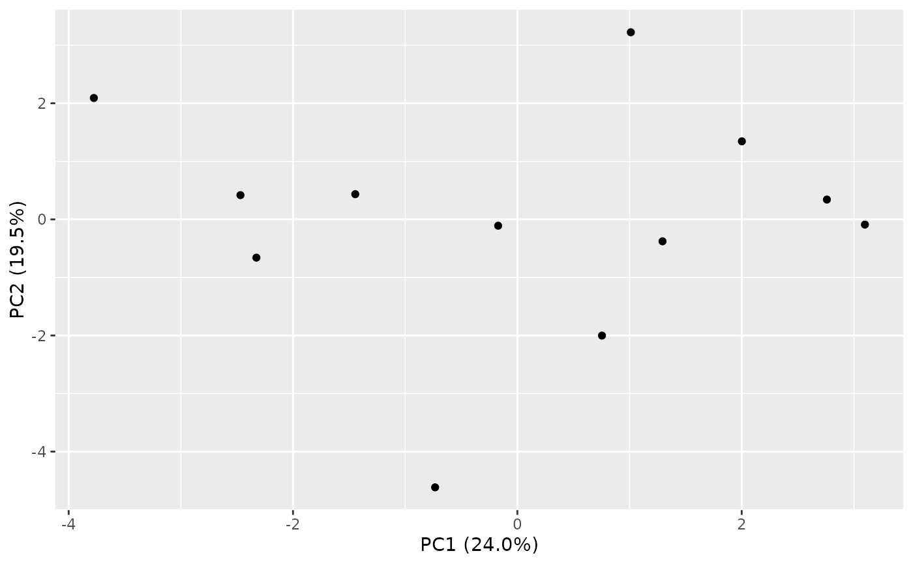

Produces a ggplot2 scatter plot of two principal component score
axes, optionally colored by a sample-metadata column. This is a purely
visual convenience: the statistical results returned by
pca_audit do not depend on this function being called.
plot_pca_audit(pca_result, pc_x = 1, pc_y = 2, color_by = NULL)An object of class "rnaSentry_pca" as returned by
pca_audit.
Integers selecting the two PC axes to plot. Defaults to
1 and 2.
Optional character. Name of a sample-metadata column in
the original colData(se) to color points by.
A ggplot object.
library(SummarizedExperiment)
set.seed(2)
counts <- matrix(rpois(240, lambda = 200), nrow = 20, ncol = 12,
dimnames = list(paste0("gene", 1:20), paste0("S", 1:12)))
coldata <- DataFrame(batch = factor(rep(c("B1", "B2"), each = 6)),
row.names = paste0("S", 1:12))
se <- SummarizedExperiment(assays = list(counts = counts), colData = coldata)
res <- pca_audit(se, batch_col = "batch")
plot_pca_audit(res)
